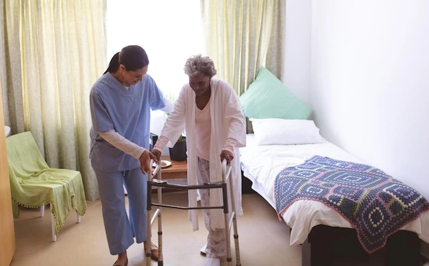

01
Daily Routine Support
Assistance with everyday routines while helping maintain comfort, confidence, and independence during recovery.
Compassionate and dependable home-care support to help make your recovery journey more comfortable, organized, and reassuring.
Returning home after surgery can bring new routines, responsibilities, and challenges. Our home-care support helps make everyday recovery more comfortable and manageable.
We provide respectful assistance around your daily routine while keeping your comfort, dignity, and independence at the center of care.
Our supportive home-care services are designed around everyday needs, helping make the transition back home more comfortable and manageable.
Home care provides practical and compassionate support while allowing you to recover in a familiar environment.
Recover in a familiar environment where you can follow a comfortable daily routine.
Support can be adapted to your individual routine, preferences, and recovery needs.
Receive practical help with everyday activities while you regain confidence.
Give loved ones greater peace of mind knowing supportive care is available at home.
Encourage safe participation in everyday routines as your recovery progresses.
From understanding your needs to providing ongoing support, our approach keeps care organized, personal, and reassuring.
We understand the individual's recovery needs, daily routine, and the type of support required at home.
A practical support plan is arranged around individual preferences, routines, and recovery requirements.
Dependable assistance is provided at home to make everyday recovery routines more comfortable.
We stay connected with the individual and family to understand changing needs and maintain ongoing support.
Our home care support focuses on everyday needs that can make the recovery period more comfortable, organized, and manageable.
Helpful reminders to support a consistent medication routine as directed by healthcare professionals.
Support with safe movement and everyday mobility around the home during recovery.
Respectful assistance with everyday personal-care activities while recovering at home.
Assistance with meals and regular nutrition throughout the recovery period.
Support with care routines according to instructions provided by healthcare professionals.
A friendly and supportive presence to help make the recovery experience more reassuring.

Recovery after surgery can be challenging for both the individual and their loved ones. Our home care support helps make everyday recovery more comfortable while giving families greater confidence and peace of mind.
Know that dependable support is available throughout the recovery journey.
Assistance with everyday routines while the individual focuses on recovery.
Support designed to help create a calm and comfortable home environment.
Keep families informed and connected throughout the care experience.
Get dependable post-surgery home care designed around your needs, comfort, and recovery journey.